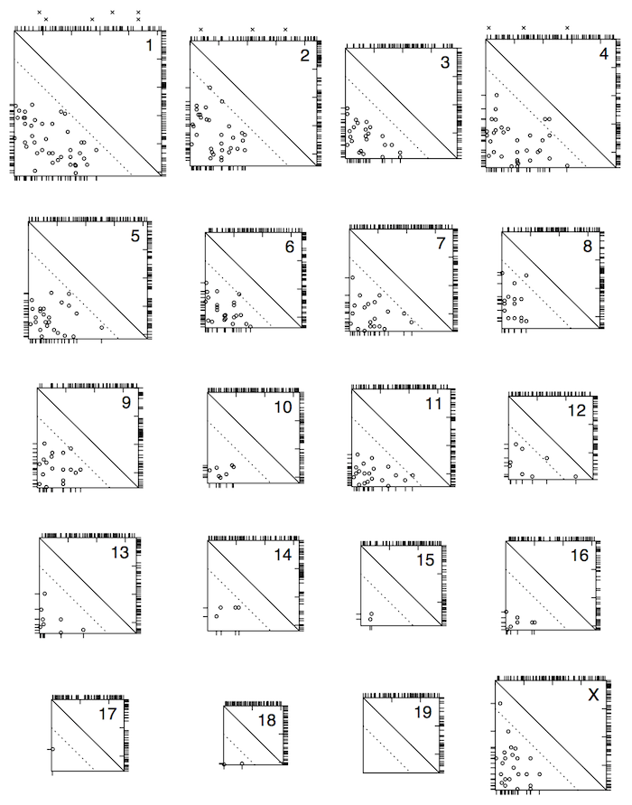

Broman KW, Rowe LB, Churchill GA, Paigen K (2002) Crossover
interference in the mouse. Genetics 160:1123-1131



Figure 3. — Crossover locations for all chromosomes. Each square represents a chromosome, with the centromere at the top and left and the telomere at the bottom and right. Ticks on the right indicate the locations of the genetic markers. The circles indicate the locations of the pair of crossovers on meiotic products exhibiting exactly two crossovers, with the location of the proximal and distal crossovers shown below and to the left, respectively. Circles above the dotted diagnonal line are crossovers separated by < 20 cM. The locations of crossovers on meiotic products that exhibit exactly one crossover are shown at the top. The x’s above chromosomes 1, 2, and 4 indicate the locations of crossovers on triplecrossover meiotic products.